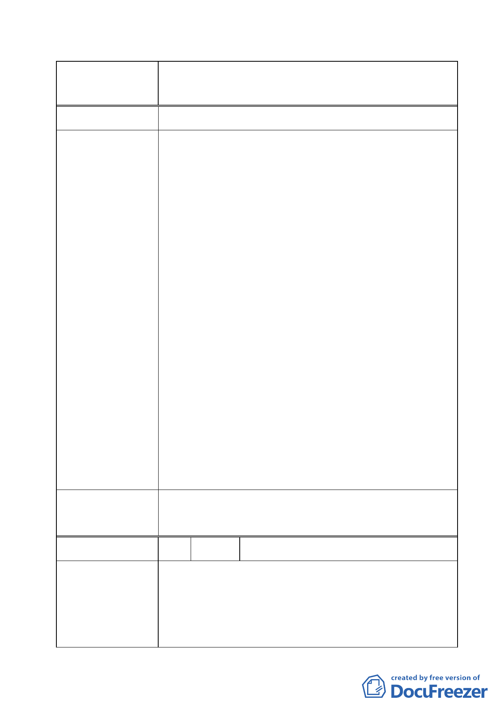

案名
變更臺北市經國七海文化園區暨週邊地區主要計
畫案
建議辦法 同陳情理由。
市府回覆意見
委員會決議
1.同意未來不引進供不特定對象之旅館住宿業使用。
2.未來「圖書館及附屬行政服務設施用地」主體係供圖書
館使用，其附屬設施比例以不超過總樓地板面積 30%為
限。
3.在國家安全防護為前提下，以不超過 15 公尺為原則，
而為保有廠商設計彈性，樓層數不予規定。
4.有關「北安段四小段 207 地號等 12 筆計畫道路用地變
更為行政區」1 節，經本府於 101 年 11 月 22 日與軍方
協商，軍方基於國家安全之防護，建議維持原公展方
案。倘最終未獲本市委員會同意，將由本府納入地區都
市計畫通盤檢討作業，俟七海文化園區及大直國防專區
發展情況再就道路用地存廢部分進行檢討。
5.另有關「原公展範圍內屬行政區之土地維持行政區」1
節，本府考量國家安全、文化特定專用區整體性及廠商
規劃設計彈性，經都委會第 3 次專案小組決議將 228、
229-1 地號部分土地進行分割，由原「行政區」變更為
「文化特定專用區」。另同小段 208 地號及 228、229-1
地號等 2 筆剩餘土地（鄰海軍司令部大門哨），則維持
「行政區」使用。
6.關於園區內(1)新建建築物面向營區之牆面窗口尺寸及
數量、(2)維持七海潭疏洪、蓄水及調節水位功能、(3)
交界處之圍牆，以樹籬或綠色植物等方式實體隔離等
節，將納入細部計畫都市設計管制原則內予以規範，後
續相關建築基地相關設計圖說將於本市都市設計及土
地使用開發許可審議委員會內一併檢核落實。
一、同決議一至四。
二、餘依市府回應意見辦理。
編號
陳情理由
3 陳情人 國防部軍備局工程營產中心
依據國防部軍備局工程營產中心 102 年 1 月 11 日備工土
管字第 1020000707 號函：
陳情理由：
案經檢討同意臺北市中山區北安段四小段 228、229-1 地
號 2 筆部分土地（A 區）由原「行政區」更為「文化特定
專用區」，同小段 208 地號及 228、229-1 地號等 2 筆剩餘
- 17 -